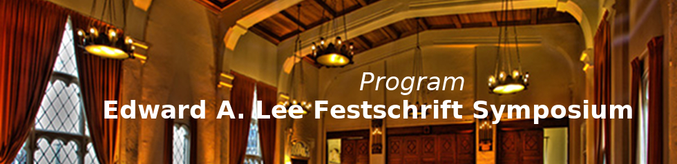

Program for Friday, October 13, 2017, The Berkeley City Club (Ballroom), 2315 Durant Avenue, Berkeley CA 94704.
|
8:00 am to 8:30 am |
Continental Breakfast |
| Opening | |
|
8:30 am to 8:40 am |
Marten Lohstroh (University of California, Berkeley), Welcome |
| Cyber-physical Systems (Chair: Prabal Dutta, University of California, Berkeley) | |
|
8:40 am to 9:00 am |
Sanjit Seshia (University of California, Berkeley), Cyber-Physical Systems Education: Explorations and Dreams |
|
9:00 am to 9:20 am |
Hans Vangheluwe (University of Antwerp and McGill University), Multi-Paradigm Modeling for Cyber-Physical Systems |
|
9:20 am to 9:40 am |
Jie Liu (Microsoft Research), Autonomous Retailing: A Frontier for Cyber-Physical Systems |
|
9:40 am to 10:00 am |
Break |
| About Time (Chair: Patricia Derler, National Instruments) | |
|
10:00 am to 10:20am |
Thomas Henzinger (Institute of Science and Technology Austria), Computing Average Response Time |
|
10:20 am to 10:40am |
Bernhard Rumpe (RWTH Aachen University), Abstraction and Refinement of Time in Hierarchically Decomposable Underspecified Architecture Simulations |
|
10:40 am to 11:00am |
Hermann Kopetz (Vienna University of Technology), Anytime Algorithms in Time-Triggered Control Systems |
|
11:00 am to 11:20am |
Sanjoy Baruah (Washington University in St. Louis), Predictability Issues in Mixed-Criticality Real-Time Systems |
|
11:20 am to 11:40 pm |
John Eidson (University of California, Berkeley), A Tribute to Edward A. Lee (By an industrial tinker visiting academia) |
|
11:40 pm to 12:40 pm |
Lunch |
| Modeling and Simulation (Chair: Shuvra Bhattacharyya, University of Maryland) | |
|
12:40 pm to 1:00 pm |
David Broman (KTH Royal Institute of Technology), Hybrid Simulation Safety: Limbos and Zero Crossings |
|
1:00 pm to 1:20 pm |
Janette Cardoso (Institut Supérieur de l'Aéronautique et de l'Espace), Ptolemy-HLA: a CPS Distributed Simulation Framework |
|
1:20 pm to 1:40 pm |
Christoph Kirsch (University of Salzburg), You can program what you want but you cannot compute what you want |
|
1:40 pm to 2:00 pm |
Marjan Sirjani (Mälardalen University, Reykjavik University), Power is overrated, go for friendliness! |
|
2:00 pm to 2:20 pm |
Break |
| Panel Discussion: "What good is determinism, anyway?" (Chair: Stephen Edwards, Columbia University) | |
|
2:20 pm to 3:00 pm |
Ruzena Bajcsy (University of California, Berkeley), |
|
3:00 pm to 3:30 pm |
Break |
| Future Avenues (Chair: Radu Grosu, Vienna University of Technology) | |
|
3:30 pm to 3:50 pm |
Dave Messerschmitt (University of California, Berkeley), Is Terminological Innovation a Good Idea? |
|
3:50 pm to 4:10 pm |
Rejeev Alur (University of Pennsylvania), Interfaces for stream processing systems |
|
4:10 pm to 4:30 pm |
Richard Murray (California Institute of Technology), Modeling, Analysis, and Design of Biomolecular Feedback Systems |
|
4:30 pm to 4:50 pm |
Bruno Sinopoli (Carnegie Mellon University), Modeling Dynamical Phenomena in the Era of Big Data |
| Closing | |
|
4:50 pm to 5:00 pm |
Christopher Brooks (University of California), Closing Remarks |
| Festivities | |
|
5:00 pm to 8:00 pm |
Reception with hors d'oeuvres (Members Lounge and Terrace). |